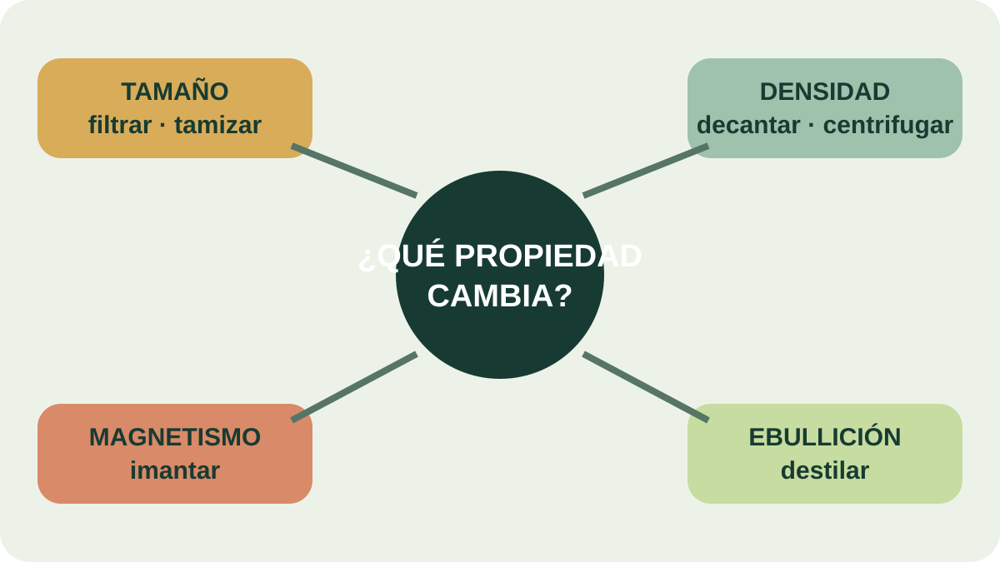

Módulo 15 · 25 minutos
Mezclas: todo lo que se puede separar
Al terminar, vas a poder clasificar una mezcla y elegir un método de separación según la propiedad que la distingue.
La pregunta anterior al método
Una planta cargada de aroma parece una sola cosa, pero contiene agua, fibras, pigmentos y compuestos volátiles. Antes de elegir un equipo conviene preguntar: ¿los componentes forman una mezcla o un compuesto? La respuesta decide si pueden separarse físicamente o si habría que transformar su identidad química.
Materia, masa y volumen
La materia es todo aquello que tiene masa y ocupa un lugar en el espacio. Su no es lo mismo que el . Ambas medidas aparecerán al cargar material en el equipo y calcular el rendimiento.
Una mezcla reúne dos o más materiales en proporciones variables. Si se distinguen sus componentes, es heterogénea y cada porción diferenciable constituye una . Si su aspecto y composición son uniformes en cualquier punto, es homogénea o solución.
Mezcla no es compuesto
Un compuesto contiene elementos en una proporción de masa fija y solo puede separarse por métodos químicos. Sus propiedades no tienen por qué parecerse a las de los elementos que lo forman. En una mezcla, en cambio, las proporciones varían, los componentes conservan su identidad y pueden separarse por procedimientos físicos.
Cuando la sal se disuelve en agua, el resultado sabe salado, pero ambos componentes continúan presentes. La extracción de aceites esenciales trabaja con separaciones físicas: cambia la distribución de los componentes sin convertirlos en sustancias nuevas.
Cada método explota una diferencia
La filtración usa una barrera: el sólido queda retenido y el fluido atraviesa el filtro. El tamizado también selecciona por tamaño, pero entre partículas sólidas. La imantación aprovecha la atracción magnética cuando uno de los sólidos responde a un imán.
La sedimentación se basa en diferencias de densidad. Las partículas más densas se depositan y luego el líquido puede retirarse con cuidado mediante . La centrifugación acelera esta separación haciendo girar la mezcla: lo más denso se dirige hacia el fondo y lo más liviano queda arriba.
La evaporación elimina la parte líquida para recuperar lo que permanece. En la cristalización, el material disuelto forma cristales sólidos separables. La cromatografía distribuye los componentes según cómo interactúan con dos fases. Y la destilación convierte líquido en vapor y vuelve a condensarlo, aprovechando distintos puntos de ebullición.
No existe un método universal. Elegir bien significa reconocer la propiedad que ofrece una diferencia útil: tamaño, densidad, magnetismo, solubilidad o punto de ebullición.

De la propiedad a la herramienta
Elegí una rama del mapa y recorréla en sentido inverso. Si observás dos fases líquidas de distinta densidad, ¿a qué método llegás? Si los componentes hierven a temperaturas diferentes, ¿qué camino seguís?
Una secuencia también puede combinar métodos
El destilado que sale del condensador no siempre es el producto final. Puede necesitar decantación para separar aceite e hidrolato, y filtraciones sucesivas para retirar impurezas. Una operación prepara la siguiente. La lógica correcta no es memorizar nombres, sino describir qué entra, qué propiedad se aprovecha y qué fracciones salen.
Actividad · Cinco mezclas, cinco decisiones
Elegí un método y la propiedad que utiliza para cada caso: arena y piedras; limaduras de hierro y arena; agua con sólido sedimentado; sal disuelta en agua; dos líquidos con puntos de ebullición distintos. Cerrá con un sexto caso: aceite esencial sobre agua. Explicá si conviene filtrar, decantar o destilar.
Entre todos los caminos, uno conduce al oficio
Filtrar, sedimentar o tamizar resuelven problemas concretos. Pero la fracción aromática necesita viajar como vapor y regresar como líquido. Es hora de recorrer el montaje completo.
Guardá esta estación
Cuando puedas explicar la idea central con tus propias palabras, marcá el módulo como completado.